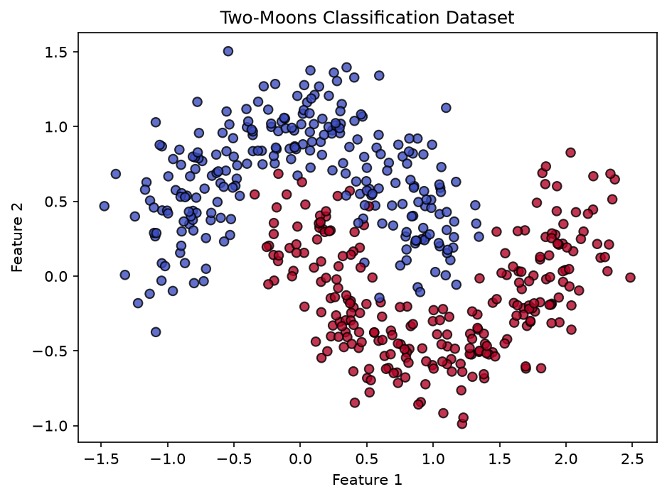
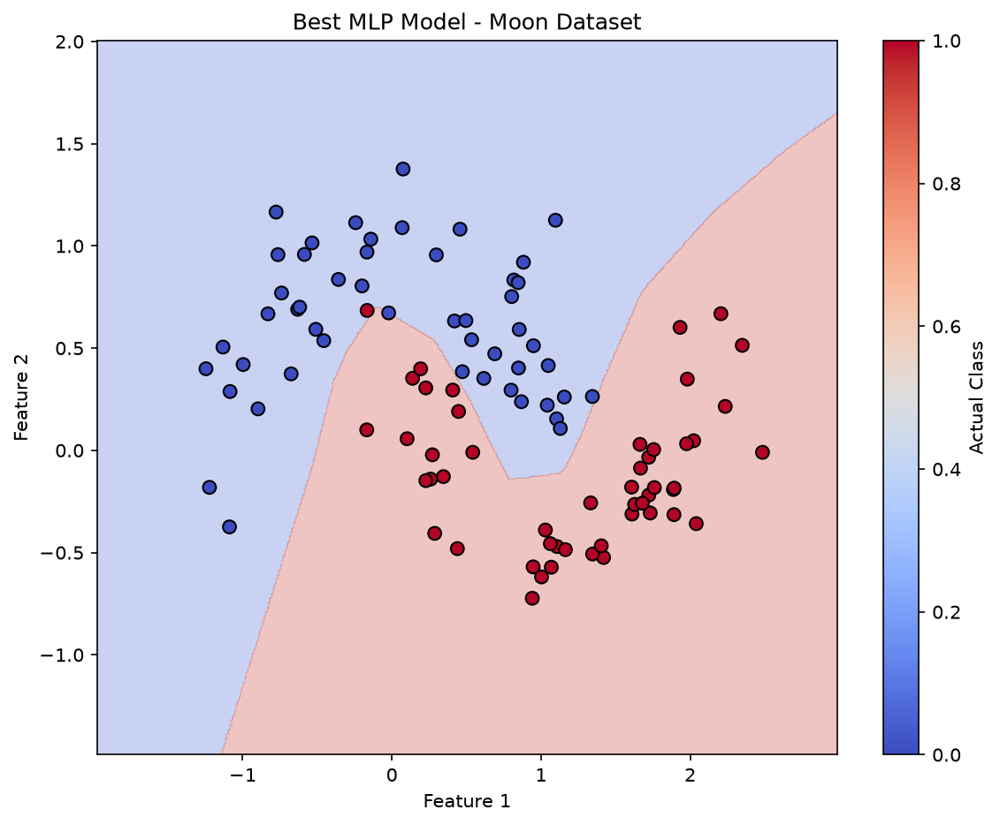
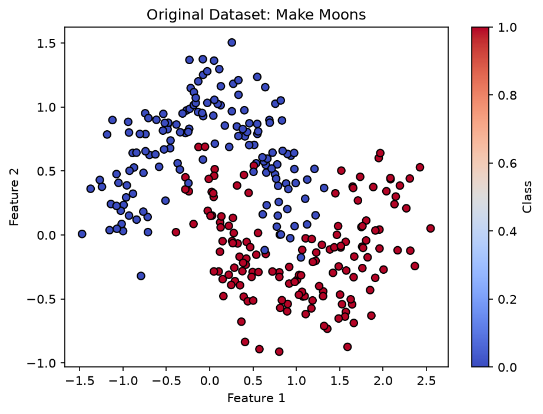
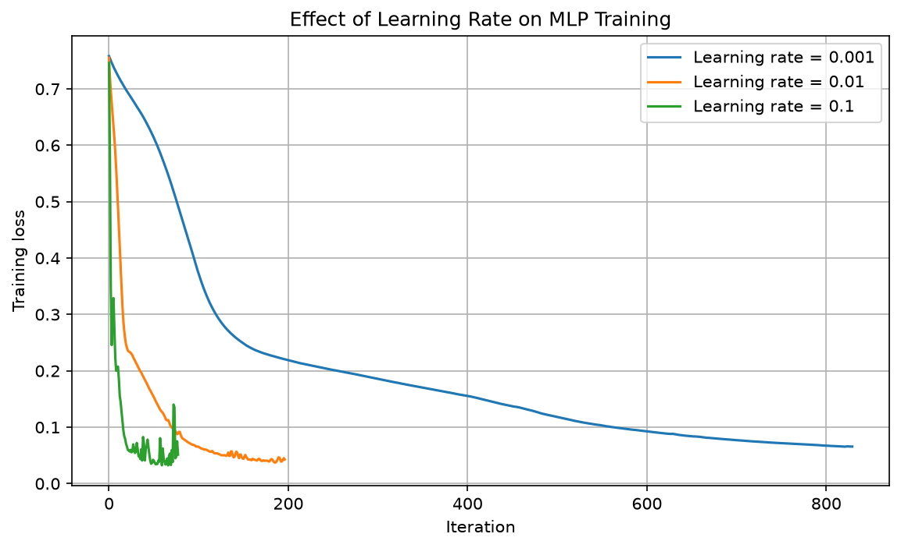
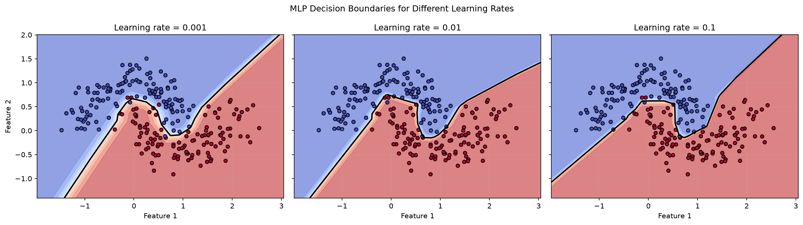
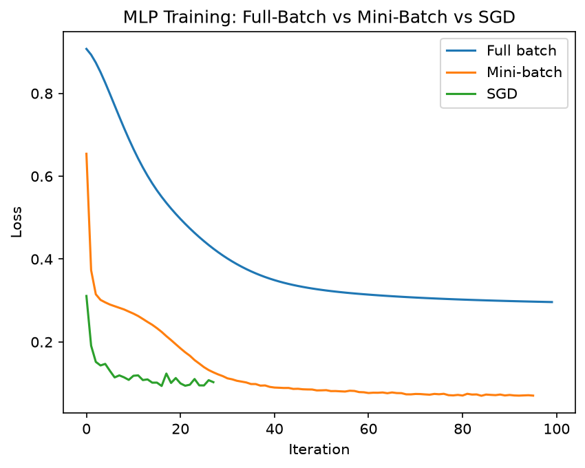
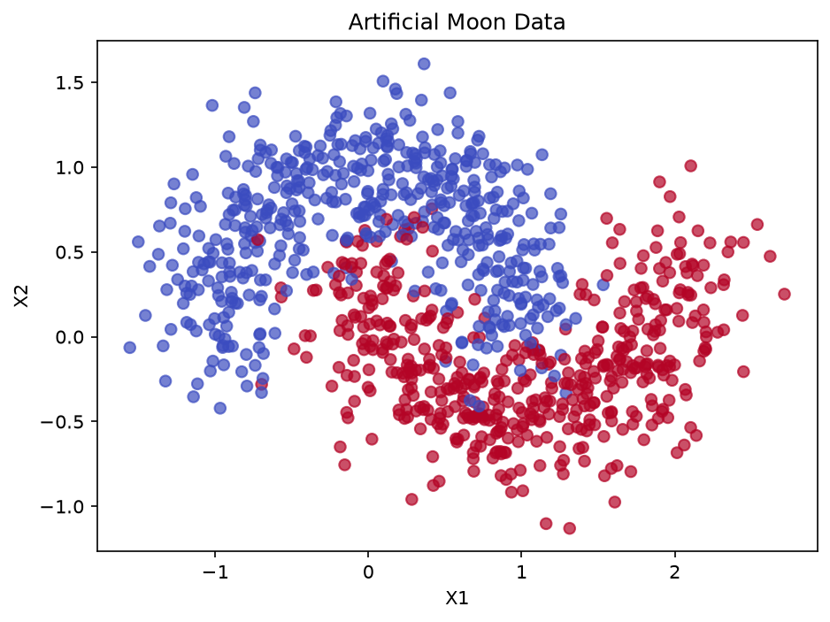
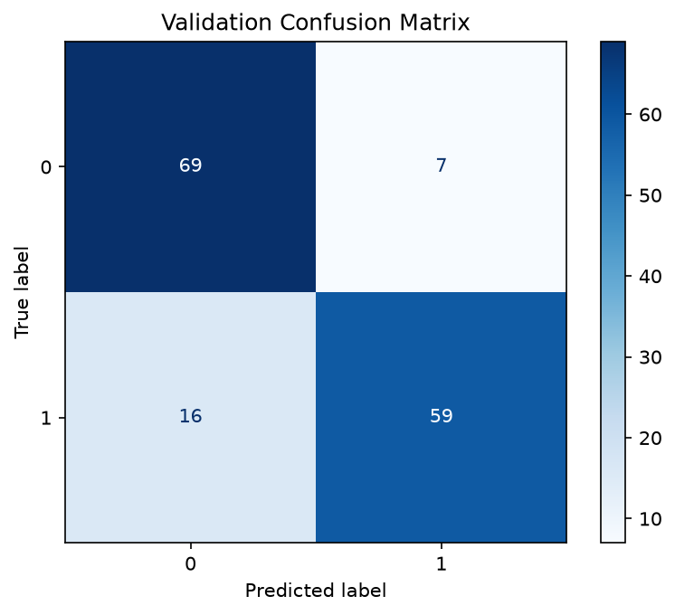

import matplotlib.pyplot as plt
import numpy as np
from sklearn.datasets import make_moons
from sklearn.metrics import classification_report, confusion_matrix, f1_score
from sklearn.model_selection import StratifiedKFold, cross_val_score, train_test_split
from sklearn.neural_network import MLPClassifier
from sklearn.pipeline import Pipeline
from sklearn.preprocessing import StandardScalerModule 3: Classification using Artificial Neural Networks
Instructor: Zahra Sadeghi
Lecture
Lab
Example 1
Create the Dataset
X, y = make_moons(
n_samples=500,
noise=0.2,
random_state=42 # controls the randomness, allowing you to reproduce experiments and obtain consistent results when you run the same code under the same conditions.
)print(X[:10])print(y[:10])Visualize the data
We have a binary classification problem with two nonlinear classes. Our goal is to learn a decision boundary that separates them.
plt.figure(figsize=(7, 5))
plt.scatter(
X[:, 0],
X[:, 1],
c=y,
cmap="coolwarm",
edgecolor="k",
alpha=0.8
)
plt.xlabel("Feature 1")
plt.ylabel("Feature 2")
plt.title("Two-Moons Classification Dataset")
plt.show()
- Create the K-Fold Cross-Validation strategy: “We divide the data into five folds. In each iteration, four folds are used for training and one fold is used for validation.”
# stratification does not balance the dataset. It preserves approximately the original class proportions.
cv = StratifiedKFold(
n_splits=5,
shuffle=True,
random_state=42
)Define a baseline MLP
With solver=“sgd”, scikit-learn uses mini-batch gradient-based optimization by default. The default batch_size is “auto”, which means: min(200, n_samples)
mlp = MLPClassifier(
hidden_layer_sizes=(10, 10),
activation="relu",
solver="sgd",
alpha=0.0001, # L2 Regularization strength
learning_rate_init=0.001,
max_iter=1000,
random_state=42
)Create a Pipeline
The Pipeline ensures that preprocessing and model training happen together. During K-Fold Cross-Validation, the scaler is fitted only on the training portion of each fold, preventing data leakage.”
StandardScaler standardizes each input feature so that it has approximately:
Mean = 0
Standard deviation = 1
z=(x−μ)/σmodel = Pipeline([
("scaler", StandardScaler()),
("mlp", mlp)
])Create the train/test split
X_train, X_test, y_train, y_test = train_test_split(
X,
y,
test_size=0.2,
stratify=y,
random_state=42
)Perform 5-Fold Cross-Validation
np.shape(X),np.shape(X_train),np.shape(X_test)((500, 2), (400, 2), (100, 2))scores = cross_val_score(
model,
X_train,
y_train,
cv=cv,
scoring="f1"
)
print("CV F1 scores:", scores)
print("\nMean accuracy:")
print(scores.mean())
print("\nStandard deviation:")
print(scores.std())CV F1 scores: [0.85333333 0.85333333 0.89411765 0.88888889 0.875 ]
Mean accuracy:
0.8729346405228758
Standard deviation:
0.017181071000806653This MLP works reasonably well. But are these hyperparameters optimal?
Grid Search
Grid Search with 5-Fold CV. GridSearchCV asks: “Which combination of hyperparameters gives me the best cross-validated F1 score?”
| hidden_layer_sizes | Number of hidden layers | Heurons in each hidden layer |
|---|---|---|
| (5,) | 1 | 5 |
| (10,) | 1 | 10 |
| (10, 10) | 2 | 10, 10 |
| (20, 10) | 2 | 20, 10 |
param_grid = {
"mlp__hidden_layer_sizes": [
(5,),
(10,),
(10, 10),
(20, 10)
],
"mlp__alpha": [
0.0001,
0.001,
0.01
], #L2 regularization strength
"mlp__learning_rate_init": [
0.001,
0.01
]
}from sklearn.model_selection import GridSearchCV
grid_search = GridSearchCV(
model,
param_grid,
cv=cv,
scoring="f1",
n_jobs=-1 #use all available CPU cores
)grid_search.fit(X_train, y_train)GridSearchCV(cv=StratifiedKFold(n_splits=5, random_state=42, shuffle=True),
estimator=Pipeline(steps=[('scaler', StandardScaler()),
('mlp',
MLPClassifier(hidden_layer_sizes=(10,
10),
max_iter=1000,
random_state=42,
solver='sgd'))]),
n_jobs=-1,
param_grid={'mlp__alpha': [0.0001, 0.001, 0.01],
'mlp__hidden_layer_sizes': [(5,), (10,), (10, 10),
(20, 10)],
'mlp__learning_rate_init': [0.001, 0.01]},
scoring='f1')In a Jupyter environment, please rerun this cell to show the HTML representation or trust the notebook. On GitHub, the HTML representation is unable to render, please try loading this page with nbviewer.org.
Parameters
Fitted attributes
Parameters
Fitted attributes
2 features
| x0 |
| x1 |
Parameters
Fitted attributes
GridSearchCV already trained using best parameters
print("Best parameters:")
print(grid_search.best_params_)
print("\nBest CV F1-score:") #mean cross-validation score for the best-performing hyperparameter combination
print(grid_search.best_score_)Best parameters:
{'mlp__alpha': 0.0001, 'mlp__hidden_layer_sizes': (10, 10), 'mlp__learning_rate_init': 0.01}
Best CV F1-score:
0.9824018776972363from sklearn.metrics import accuracy_score, classification_report
best_model = grid_search.best_estimator_
y_test_pred = best_model.predict(X_test)
accuracy = accuracy_score(y_test, y_test_pred)
print("Best MLP Model:")
print(best_model)
print("\nBest Parameters:")
print(grid_search.best_params_)
print("\nTest Accuracy:", accuracy)
Best MLP Model:
Pipeline(steps=[('scaler', StandardScaler()),
('mlp',
MLPClassifier(hidden_layer_sizes=(10, 10),
learning_rate_init=0.01, max_iter=1000,
random_state=42, solver='sgd'))])
Best Parameters:
{'mlp__alpha': 0.0001, 'mlp__hidden_layer_sizes': (10, 10), 'mlp__learning_rate_init': 0.01}
Test Accuracy: 0.98Visualize the decision boundary
import numpy as np
import matplotlib.pyplot as plt
# Best model selected by GridSearchCV
best_model = grid_search.best_estimator_
# Create a mesh/grid covering the dataset
x_min = X[:, 0].min() - 0.5
x_max = X[:, 0].max() + 0.5
y_min = X[:, 1].min() - 0.5
y_max = X[:, 1].max() + 0.5
xx, yy = np.meshgrid(
np.linspace(x_min, x_max, 500),
np.linspace(y_min, y_max, 500)
)
# Predict the class for every point in the grid
grid_points = np.c_[xx.ravel(), yy.ravel()] #number of points × number of features
Z = best_model.predict(grid_points)
Z = Z.reshape(xx.shape)
# --------------------------------------------------
# Plot
# --------------------------------------------------
plt.figure(figsize=(9, 7))
# Decision boundary: color regions according to the model's predictions.
plt.contourf(
xx,
yy,
Z,
cmap="coolwarm",
alpha=0.3
)
# Test data
scatter = plt.scatter(
X_test[:, 0],
X_test[:, 1],
c=y_test,
cmap="coolwarm",
edgecolors="black",
s=50
)
plt.title("Best MLP Model - Moon Dataset")
plt.xlabel("Feature 1")
plt.ylabel("Feature 2")
plt.colorbar(scatter, label="Actual Class")
plt.show()
Example 2
import numpy as np
import matplotlib.pyplot as plt
from sklearn.datasets import make_moons
from sklearn.model_selection import train_test_split
from sklearn.preprocessing import StandardScaler
from sklearn.neural_network import MLPClassifier
from sklearn.pipeline import make_pipeline
from sklearn.metrics import accuracy_scoreGenerate the Dataset
X, y = make_moons(
n_samples=300,
noise=0.20,
random_state=42
)
X_train, X_test, y_train, y_test = train_test_split(
X, y,
test_size=0.2,
random_state=42,
stratify=y
)Visualize the Original Data
plt.figure(figsize=(7, 5))
plt.scatter(
X[:, 0],
X[:, 1],
c=y,
cmap="coolwarm",
edgecolors="black"
)
plt.xlabel("Feature 1")
plt.ylabel("Feature 2")
plt.title("Original Dataset: Make Moons")
plt.colorbar(label="Class")
plt.show()
Train MLP with Different Learning Rates
learning_rates = [0.001, 0.01, 0.1]
models = {}
losses = {}
for lr in learning_rates:
model = make_pipeline(
StandardScaler(),
MLPClassifier(
hidden_layer_sizes=(10, 10),
activation="relu",
solver="adam",
learning_rate_init=lr,
max_iter=1000,
random_state=42
)
)
model.fit(X_train, y_train)
# Access the trained MLP inside the pipeline
mlp = model.named_steps["mlpclassifier"]
models[lr] = model
losses[lr] = mlp.loss_curve_
predictions = model.predict(X_test)
print(f"Learning rate: {lr}")
print(f"Test accuracy: {accuracy_score(y_test, predictions):.3f}")
print(f"Training iterations: {mlp.n_iter_}")
print("-" * 35)Learning rate: 0.001
Test accuracy: 0.917
Training iterations: 830
-----------------------------------
Learning rate: 0.01
Test accuracy: 0.900
Training iterations: 197
-----------------------------------
Learning rate: 0.1
Test accuracy: 0.883
Training iterations: 78
-----------------------------------Visualize Training Loss
plt.figure(figsize=(9, 5))
for lr in learning_rates:
plt.plot(
losses[lr],
label=f"Learning rate = {lr}"
)
plt.xlabel("Iteration")
plt.ylabel("Training loss")
plt.title("Effect of Learning Rate on MLP Training")
plt.legend()
plt.grid(True)
plt.show()
Visualize Decision Boundaries
fig, axes = plt.subplots(
1, 3,
figsize=(16, 4.5),
sharex=True,
sharey=True
)
x_min, x_max = X[:, 0].min() - 0.5, X[:, 0].max() + 0.5
y_min, y_max = X[:, 1].min() - 0.5, X[:, 1].max() + 0.5
xx, yy = np.meshgrid(
np.linspace(x_min, x_max, 250),
np.linspace(y_min, y_max, 250)
)
grid = np.c_[xx.ravel(), yy.ravel()]
for ax, lr in zip(axes, learning_rates):
model = models[lr]
probabilities = model.predict_proba(grid)[:, 1]
Z = probabilities.reshape(xx.shape)
# Predicted probability regions
ax.contourf(
xx, yy, Z,
levels=np.linspace(0, 1, 11),
cmap="coolwarm",
alpha=0.6
)
# Decision boundary at probability 0.5
ax.contour(
xx, yy, Z,
levels=[0.5],
colors="black",
linewidths=2
)
# Training data
ax.scatter(
X_train[:, 0],
X_train[:, 1],
c=y_train,
cmap="coolwarm",
edgecolors="black",
s=25
)
ax.set_title(f"Learning rate = {lr}")
ax.set_xlabel("Feature 1")
ax.grid(alpha=0.2)
axes[0].set_ylabel("Feature 2")
fig.suptitle("MLP Decision Boundaries for Different Learning Rates")
plt.tight_layout()
plt.show()
- Learning rate = 0.001: Updates may be small, leading to slower learning.
- Learning rate = 0.01: May provide a good balance between speed and stability.
- Learning rate = 0.1: Updates are larger, which may speed up learning or make it less stable.
Example 3
import numpy as np
import matplotlib.pyplot as plt
from sklearn.datasets import make_moons
from sklearn.model_selection import train_test_split
from sklearn.preprocessing import StandardScaler
from sklearn.neural_network import MLPClassifier
from sklearn.metrics import accuracy_scoreX, y = make_moons(
n_samples=1000,
noise=0.2,
random_state=42
)
X_train, X_test, y_train, y_test = train_test_split(
X,
y,
test_size=0.2,
stratify=y,
random_state=42
)
scaler = StandardScaler()
X_train = scaler.fit_transform(X_train)
X_test = scaler.transform(X_test)Full-batch Gradient Descent
batch_size = len(X_train)One subtle point: in scikit-learn’s implementation, the output activation is handled internally according to the classification task. activation=“relu” only specifies the hidden layers.
mlp_full = MLPClassifier(
hidden_layer_sizes=(20, 20),
activation="relu",
solver="sgd",
learning_rate_init=0.01,
batch_size=len(X_train), # Full batch
max_iter=100,
random_state=42
)
mlp_full.fit(X_train, y_train)C:\Users\benfi\AppData\Local\Packages\PythonSoftwareFoundation.Python.3.12_qbz5n2kfra8p0\LocalCache\local-packages\Python312\site-packages\sklearn\neural_network\_multilayer_perceptron.py:785: ConvergenceWarning: Stochastic Optimizer: Maximum iterations (100) reached and the optimization hasn't converged yet.
warnings.warn(MLPClassifier(batch_size=800, hidden_layer_sizes=(20, 20),
learning_rate_init=0.01, max_iter=100, random_state=42,
solver='sgd')In a Jupyter environment, please rerun this cell to show the HTML representation or trust the notebook. On GitHub, the HTML representation is unable to render, please try loading this page with nbviewer.org.
Parameters
Fitted attributes
Stochastic Gradient Descent
batch_size = 1
mlp_sgd = MLPClassifier(
hidden_layer_sizes=(20, 20),
activation="relu",
solver="sgd",
learning_rate_init=0.01,
batch_size=1, # stochastic GD: batch_size=1
max_iter=100, # max_iter is the maximum number of epochs
random_state=42
)
mlp_sgd.fit(X_train, y_train)MLPClassifier(batch_size=1, hidden_layer_sizes=(20, 20),
learning_rate_init=0.01, max_iter=100, random_state=42,
solver='sgd')In a Jupyter environment, please rerun this cell to show the HTML representation or trust the notebook. On GitHub, the HTML representation is unable to render, please try loading this page with nbviewer.org.
Parameters
Fitted attributes
Mini-batch Gradient Descent
batch_size = 32
mlp_mini = MLPClassifier(
hidden_layer_sizes=(20, 20),
activation="relu",
solver="sgd",
learning_rate_init=0.01,
batch_size=32, # Mini-batch
max_iter=100,
random_state=42
)
mlp_mini.fit(X_train, y_train)MLPClassifier(batch_size=32, hidden_layer_sizes=(20, 20),
learning_rate_init=0.01, max_iter=100, random_state=42,
solver='sgd')In a Jupyter environment, please rerun this cell to show the HTML representation or trust the notebook. On GitHub, the HTML representation is unable to render, please try loading this page with nbviewer.org.
Parameters
Fitted attributes
Compare the Loss Curves
plt.plot(mlp_full.loss_curve_, label="Full batch")
plt.plot(mlp_mini.loss_curve_, label="Mini-batch")
plt.plot(mlp_sgd.loss_curve_, label="SGD")
plt.xlabel("Iteration")
plt.ylabel("Loss")
plt.legend()
plt.title("MLP Training: Full-Batch vs Mini-Batch vs SGD")
plt.show()
Example 4
import matplotlib.pyplot as plt
import numpy as np
from sklearn.datasets import make_moons
from sklearn.metrics import (
ConfusionMatrixDisplay,
accuracy_score,
roc_auc_score,
)
from sklearn.model_selection import (
GridSearchCV,
StratifiedKFold,
cross_validate,
train_test_split,
)
from sklearn.neural_network import MLPClassifier
from sklearn.pipeline import Pipeline
from sklearn.preprocessing import StandardScaler
np.random.seed(42)Create artificial moon data
X, y = make_moons(
n_samples=1000,
noise=0.25,
random_state=42
)
print("X shape:", X.shape)
print("y shape:", y.shape)
print("First 5 observations:")
print(X[:5])
print("First 5 labels:")
print(y[:5])X shape: (1000, 2)
y shape: (1000,)
First 5 observations:
[[-0.14176498 0.55823629]
[ 1.19796627 -0.30399544]
[ 0.759391 0.1102501 ]
[ 0.02331452 -0.60356298]
[-0.80797972 0.54846574]]
First 5 labels:
[1 1 1 1 0]plt.figure(figsize=(7, 5))
plt.scatter(
X[:, 0],
X[:, 1],
c=y,
cmap="coolwarm",
alpha=0.7
)
plt.xlabel("X1")
plt.ylabel("X2")
plt.title("Artificial Moon Data")
plt.show()
train_test_split(X, y, test_size=0.15, stratify=y) Purpose: Preserves approximately the same proportion of each class in the training and test sets.
For example, if your target variable contains 80% No and 20% Yes, both datasets will have approximately the same proportions.
Use when: You are working on a classification problem, especially with imbalanced classes.
# split your dataset into two parts: a temporary dataset for training/validation and a test dataset for final evaluation.
X_temp, X_test, y_temp, y_test = train_test_split(
X,
y,
test_size=0.15, #Allocates 15% of the data to the test set and 85% to the temporary set.
stratify=y, #Preserves approximately the same class proportions in both sets as in the original dataset.
random_state=42
)groups = df[‘region’]
stratify = groups #Preserves proportions of another categorical variable
This approach is useful when you want to maintain the distribution of another categorical variable, such as region or demographic category.
Now split the remaining 85% into training and validation.
Entire dataset (100%) : x_tem (85%), x_test (15%)
X_train, X_val, y_train, y_val = train_test_split(
X_temp,
y_temp,
test_size=0.1765, # Allocates approximately 17.65% of the temporary dataset to validation.
stratify=y_temp, # Preserves approximately the same class proportions in the training and validation sets.
random_state=42
)print("Training:", X_train.shape)
print("Validation:", X_val.shape)
print("Test:", X_test.shape)Training: (699, 2)
Validation: (151, 2)
Test: (150, 2)The class proportions should be approximately the same because of stratify.
Class proportion = (Number of samples in the class) / (Total number of samples)
print("Overall class proportions:")
print(np.bincount(y) / len(y)) #np.bincount() counts how many times each non-negative integer appears in an array.
print("\nTraining class proportions:")
print(np.bincount(y_train) / len(y_train))
print("\nValidation class proportions:")
print(np.bincount(y_val) / len(y_val))
print("\nTest class proportions:")
print(np.bincount(y_test) / len(y_test))Overall class proportions:
[0.5 0.5]
Training class proportions:
[0.49928469 0.50071531]
Validation class proportions:
[0.50331126 0.49668874]
Test class proportions:
[0.5 0.5]scaler = StandardScaler()
X_train_scaled = scaler.fit_transform(X_train)
X_val_scaled = scaler.transform(X_val)
X_test_scaled = scaler.transform(X_test)ann = MLPClassifier(
hidden_layer_sizes=(10,), # Hidden Layer (10 neurons)
activation="relu",
solver="sgd",
max_iter=1000,
random_state=42
)ann.fit() — Training the model
During training, the ANN:
Takes the input features from X_train. Makes predictions. Compares its predictions with the actual labels in y_train. Calculates the error (loss). Adjusts its weights to reduce that error. Repeats this process over multiple training iterations.
ann.fit(X_train_scaled, y_train)MLPClassifier(hidden_layer_sizes=(10,), max_iter=1000, random_state=42,
solver='sgd')In a Jupyter environment, please rerun this cell to show the HTML representation or trust the notebook. On GitHub, the HTML representation is unable to render, please try loading this page with nbviewer.org.
Parameters
Fitted attributes
ann.predict() — Making predictions
The purpose of predict() is to use the trained model to predict the target labels for the input data.
X_test: The input features for the test dataset. y_pred: The labels predicted by the ANN. Unlike fit(), predict() does not train the model or adjust its weights.
y_train_pred = ann.predict(X_train_scaled)
train_accuracy = accuracy_score(
y_train,
y_train_pred
)
print("Training accuracy:", train_accuracy)Training accuracy: 0.8497854077253219y_val_pred = ann.predict(X_val_scaled)
val_accuracy = accuracy_score(
y_val,
y_val_pred
)
print("Validation accuracy:", val_accuracy)Validation accuracy: 0.847682119205298cm = confusion_matrix(
y_val,
y_val_pred
)
ConfusionMatrixDisplay.from_predictions(
y_val,
y_val_pred,
cmap="Blues"
)
plt.title("Validation Confusion Matrix")
plt.show()
Macro F1-score measures a classification model’s performance across all classes, giving each class equal importance regardless of how many samples it contains.

K = number of classes. F1i = F1-score for class i.

Weighted F1 calculates the F1-score for each class and weights it according to the number of actual samples in that class.
K = number of classes. ni = number of actual samples in class i. F1i = F1-score for class i.
print(
classification_report(
y_val,
y_val_pred
)
) precision recall f1-score support
0 0.81 0.91 0.86 76
1 0.89 0.79 0.84 75
accuracy 0.85 151
macro avg 0.85 0.85 0.85 151
weighted avg 0.85 0.85 0.85 151
y_val_prob = ann.predict_proba(X_val_scaled)[:, 1] #calculates the predicted probability that each observation in your validation set belongs to class 1.
print(y_val_prob[:10])[0.18488174 0.82853905 0.99079311 0.14011839 0.15506694 0.05794431 0.14837578 0.09468278 0.94824168 0.06680027]val_auc = roc_auc_score(
y_val,
y_val_prob
)
print("Validation ROC-AUC:", val_auc)Validation ROC-AUC: 0.9515789473684211cross-validation: Our validation set gives us one estimate of performance.
But that estimate can depend somewhat on how we happened to split the data.
5-fold stratified cross-validation:
Fold 1: TRAIN TRAIN TRAIN VALID Fold 2: TRAIN TRAIN VALID TRAIN Fold 3: TRAIN VALID TRAIN TRAIN Fold 4: VALID TRAIN TRAIN TRAIN Fold 5: TRAIN TRAIN TRAIN VALID
pipeline = Pipeline([
("scaler", StandardScaler()),
("ann", MLPClassifier(
hidden_layer_sizes=(10,),
activation="relu", #hidden layer --- For scikit-learn's MLPClassifier, the output activation is selected automatically. binary: sigmoid, multiclass: softmax
solver="adam",
max_iter=1000,
random_state=42
))
])cv = StratifiedKFold(
n_splits=5,
shuffle=True,
random_state=42
)cv_results = cross_validate(
pipeline,
X_train,
y_train,
cv=cv,
scoring=[
"accuracy",
"precision",
"recall",
"f1",
"roc_auc"
],
return_train_score=True
)
cv_resultsC:\Users\benfi\AppData\Local\Packages\PythonSoftwareFoundation.Python.3.12_qbz5n2kfra8p0\LocalCache\local-packages\Python312\site-packages\sklearn\neural_network\_multilayer_perceptron.py:785: ConvergenceWarning: Stochastic Optimizer: Maximum iterations (1000) reached and the optimization hasn't converged yet.
warnings.warn(
C:\Users\benfi\AppData\Local\Packages\PythonSoftwareFoundation.Python.3.12_qbz5n2kfra8p0\LocalCache\local-packages\Python312\site-packages\sklearn\neural_network\_multilayer_perceptron.py:785: ConvergenceWarning: Stochastic Optimizer: Maximum iterations (1000) reached and the optimization hasn't converged yet.
warnings.warn({'fit_time': array([0.94594765, 0.29873848, 0.70774269, 0.17882371, 0.26772141]),
'score_time': array([0.01406431, 0.01017118, 0.0081439 , 0.01793575, 0.00652456]),
'test_accuracy': array([0.94285714, 0.86428571, 0.96428571, 0.85714286, 0.81294964]),
'train_accuracy': array([0.93381038, 0.86404293, 0.9391771 , 0.86404293, 0.87321429]),
'test_precision': array([0.95588235, 0.88059701, 0.97101449, 0.83783784, 0.76829268]),
'train_precision': array([0.93862816, 0.85172414, 0.93006993, 0.85664336, 0.85910653]),
'test_recall': array([0.92857143, 0.84285714, 0.95714286, 0.88571429, 0.9 ]),
'train_recall': array([0.92857143, 0.88214286, 0.95 , 0.875 , 0.89285714]),
'test_f1': array([0.94202899, 0.86131387, 0.96402878, 0.86111111, 0.82894737]),
'train_f1': array([0.93357271, 0.86666667, 0.93992933, 0.86572438, 0.87565674]),
'test_roc_auc': array([0.98591837, 0.9444898 , 0.99244898, 0.92979592, 0.90848861]),
'train_roc_auc': array([0.97901946, 0.94098822, 0.97844342, 0.9421403 , 0.95235969])}for metric in ["accuracy", "precision", "recall", "f1", "roc_auc"]:
scores = cv_results[f"test_{metric}"]
print(
f"{metric:10s}: "
f"{scores.mean():.3f} "
f"+/- {scores.std():.3f}"
)accuracy : 0.888 +/- 0.057
precision : 0.883 +/- 0.075
recall : 0.903 +/- 0.039
f1 : 0.891 +/- 0.052
roc_auc : 0.952 +/- 0.032